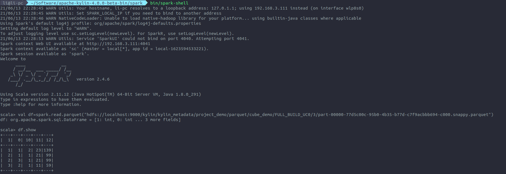

Ch03-Kylin 之 Query
June 12, 2021
query 的整体执行流程如下图所示。可以看到整个 query 的逻辑实际上是由 QueryService 处理的，这里会做重要的路由处理，是执行 cube 的查询，还是下推到其他查询引擎，还是下推到 hive。这个路由逻辑简单来说，如下图所示：

完整的处理逻辑如下图所示：
query 和 update 的逻辑如下所示：
1. Query #
在上图的 query 流程中，其实可以看到所有的处理过程最后会交给 calcite，而 calcite 的实现类 OLAPTableScan 会将 OLAPToEnumerableConverter 注册进来，最终在implement方法中完成 RelNode 到 Cube 处理逻辑的转换。
1.1 Cube 选取流程 #
整个过程封装在 RealizationChooser#selectRealization 中，大体上可以分为两步，第一部分是makeOrderedModelMap()，这一步会选出所有满足的 cuboid，第二步是selectRealization()，这一步骤会选出唯一一适合的 cuboid(如果所有的都合适的话，就选 set 里面遍历到的第一个)。详细可以分成下述几步来讲
1.1.1 对 model 及对应的 realizations 进行过滤及排序 #
- 获取属于该 project 下 factTableName 与查询中事实表相等的所有 realizations，factTableName 即 context.firstTableScan.getTableName
- 对 realizations 执行过滤，得到 filteredRealizations
- NOT READY cube 会被过滤
- 黑名单中的 cube 会被过滤
- cube.allColumns 必须与 OLAPContext.allColumns 相等或是其父集。cube.allColumns 包含了事实表的外键列、维度表的主键列、所有度量涉及的列、所有维度列
- OLAPContext.allColumns 在
OLAPRel#implementOLAP方法中被添加 - OLAPContext.filterColumns 在
OLAPFilterRel#implementOLAP中被添加 - project 包含的列（即 agg 参数列即 group by 列），在
OLAPProjectRel#implementOLAP添加 - 遍历 filteredRealizations，对于每个 realization，获取其 model，并记录每个 mode 对应的最小的 realization cost 及 model 对应的 Set
- 根据各个 model 对应的最小 realization cost，对各个
<model, Set<IRealization>>进行排序，得到 modelMap:Map<DataModelDesc, Set<IRealization>> - 如果 modelMap 为空，则抛 No model found for … 异常
1.1.2 从 modelMap 中选择最终的 realization #
public class RealizationChooser {
private static void attemptSelectRealization(OLAPContext context) {
Map<DataModelDesc, Set<IRealization>> modelMap = makeOrderedModelMap(context);
for (Map.Entry<DataModelDesc, Set<IRealization>> entry : modelMap.entrySet()) {
...
IRealization realization = QueryRouter.selectRealization(context, entry.getValue());
if (realization == null) {
logger.info("Give up on model {} because no suitable realization is found", model);
context.unfixModel();
continue;
}
context.realization = realization;
return
}
throw new NoRealizationFoundException("No realization found for " + toErrorMsg(context));
}
}
1.1.2.1 modelMap 遍历逻辑 #
IRealization realization = QueryRouter.selectRealization(context, entry.getValue())
- 若 realization 不为 null，则 realization 就是选中的 realization，设置为 context.realization，选择过程结束；否则，continue，对下一个 entry 进行同样的调用
- 若遍历完所有的 entry，依然没有符合要求的 realization，则抛异常 NoRealizationFoundException
1.1.2.2 selectRealization 执行逻辑 #
对候选的 realizations 应用 3 条规则，以进行过滤和重新排序：
- 移除 (RemoveBlackoutRealizationsRule) 黑名单中的和移除被配置 (kylin.query.realization-filter) 过滤的
- 移除 (RemoveUncapableRealizationsRule) 不适用的（逻辑封装在 CubeCapabilityChecker#check 中），以下几种情况不适用：
- OLAPContext 维度列（其 groupByColumns（在 OLAPAggregateRel#implementOLAP 中添加） + filterColumns（在 OLAPFilterRel#implementOLAP 中添加））中存在不在 cube 维度列中的情况
- OLAPContext.aggregations（在 OLAPAggregateRel#implementOLAP 中添加）中存在不在 cube aggregations 中的情况
- limit 在 agg 之前（使用 OLAPContext#limitPrecedesAggr 判断，在 OLAPAggregateRel#implementOLAP 中进行判断），会导致 cube 的度量结果与查询不一致
- 对剩下的进行排序 (RealizationSortRule)，优先级最高、cost 最小的胜出
1.2 Cuboid 定位流程 #
1.2.1 Kylin 是怎么去掉 join 过程 #
Kylin 最终下推到 Cubiod 的时候，应该是个点查的操作。比如 SQL 里面包含若干 left join，但是最终执行的时候，绝对不会有 left join，那么这个去掉 join 的过程是如何完成的？
这一块逻辑可以参考CalciteToSparkPlaner.scala的逻辑。
class CalciteToSparkPlaner(dataContext: DataContext) extends RelVisitor with Logging {
private val stack = new util.Stack[DataFrame]()
private val unionStack = new util.Stack[Int]()
stack.push(node match {
...
case rel: OLAPJoinRel =>
if (!rel.isRuntimeJoin) {
logTime("join with table scan") {
TableScanPlan.createOLAPTable(rel, dataContext)
}
} else {
val right = stack.pop()
val left = stack.pop()
logTime("join") {
plans.JoinPlan.join(Lists.newArrayList(left, right), rel)
}
}
case rel: OLAPUnionRel =>
val size = unionStack.pop()
val java = Range(0, stack.size() - size).map(a => stack.pop()).asJava
logTime("union") {
plans.UnionPlan.union(Lists.newArrayList(java), rel, dataContext)
}
...
})
}
可以看到对于查询是的 join 操作，最终会走到TableScanPlan.createOLAPTable(rel, dataContext)这个逻辑，而这个逻辑本质上是查找并读取 cuboid 的逻辑。
object TableScanPlan extends LogEx {
def createOLAPTable(rel: OLAPRel, dataContext: DataContext): DataFrame = logTime("table scan", info = true) {
...
val request = query.getStorageQueryRequest(
olapContext.storageContext,
olapContext.getSQLDigest,
returnTupleInfo)
request.getGroups
val cuboid = request.getCuboid
...
var df = SparderContext.getSparkSession.kylin
.format("parquet")
.cuboidTable(cubeInstance, cuboid)
.toDF(schemaNames: _*)
...
val columns = RuntimeHelper.gtSchemaToCalciteSchema(
cuboid.getCuboidToGridTableMapping.getPrimaryKey,
tuple._2,
factTableAlias,
rel.getColumnRowType.getAllColumns.asScala.toList,
df.schema,
columnIndex,
tupleIdx,
topNMapping,
topNMeasureIndexes)
df.select(columns: _*)
}
}
而 cuboid 的定位逻辑其实并不复杂。
比如 SQL 中表示的维度是 A, B, C，用 3 位的 2 进制可以表示为100(A), 010(B), 001(C)。那么 AB 就可以表示为110，BC 可以表示为011，AC 可以表示为101，同理 ABC 就可以表示为111。

上图路径hdfs://localhost:9000/kylin/kylin_metadata/project_demo/parquet/cube_demo/FULL_BUILD_UC0/3/part-00000-77d5c00c-95b0-4b35-b77d-c7f9acbbb694-c000.snappy.parquet中的3表示的就是对维度 BC 建立的 cuboid。
而文件内容中 schema 信息 (10, 11, 12) 则表示的是度量COUNT(1), MIN(D)，SUM(E)。而（1，0）表示的是 A, B 两个维度。